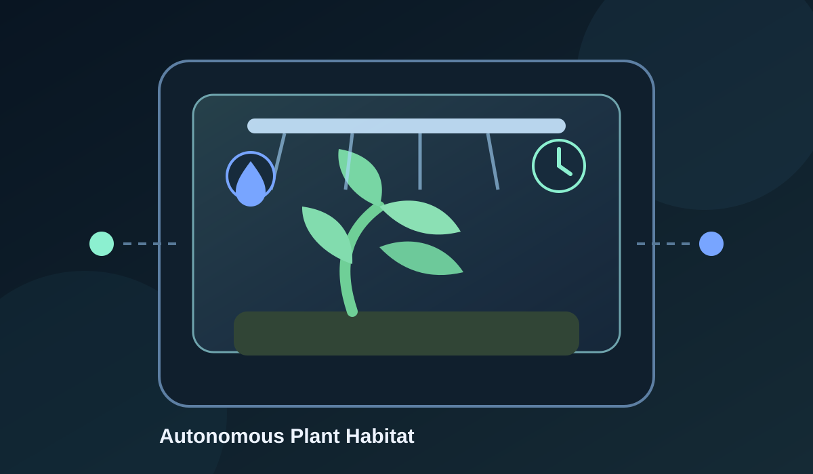
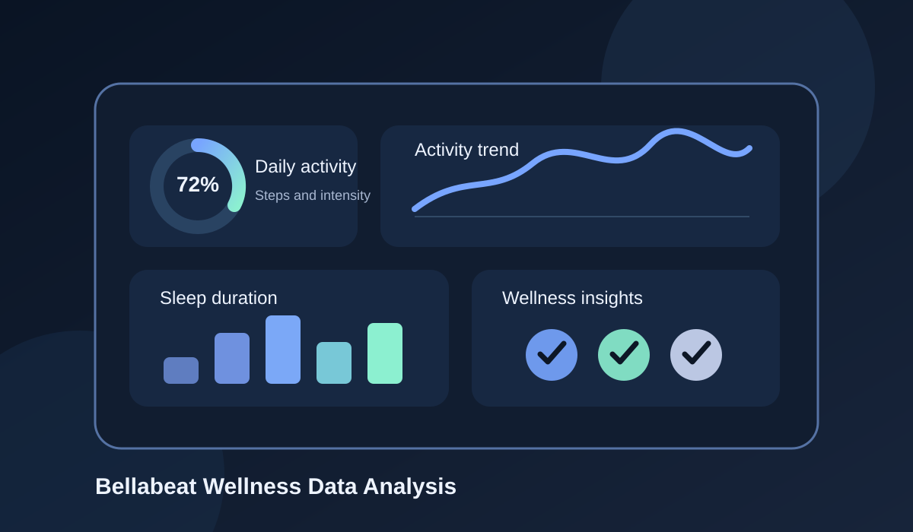

Featured
Featured
MSc Thesis2026
Parameterized Robotic Sample Dispensing
A configurable software framework for laboratory sample-dispensing workflows using a DOBOT MG400 robot.
MSc in Engineering
Selected projects developed across mechatronics, automation, data engineering, control, and mechanical design.
Engineering areas
Selected work
11 projects
Featured
A configurable software framework for laboratory sample-dispensing workflows using a DOBOT MG400 robot.

A machine-learning workflow for identifying plastic materials from spectral signatures and hyperspectral measurements.

A comparison of deep variational autoencoder and convolutional approaches using audio features.
 Team project
Team project
An embedded machine-learning system for classifying electrical resistors from visual data on constrained hardware.
 Team project
Team project
A multidisciplinary UAV project combining modular mechanical design, embedded systems, and flight-system integration.

Ongoing projectAn evolving engineering project exploring controlled plant-growth environments through progressive experiments in monitoring, automation, mechanical design, and environmental control.
An anonymized case study covering ingestion, batch and delta processing, data quality, and Snowflake delivery patterns.

A data-analysis case study exploring activity, sleep, and wellness-device usage patterns to develop practical business and marketing recommendations.
 Under NDA
Under NDA
An industrial machine-learning project exploring whether operational data available before dispatch could provide early indicators of shipment delay risk.
 Team project
Team project
A nonlinear MPC system with Extended Kalman Filter state estimation for regulating water levels in an interconnected multi-tank process.

A thermo-mechanical finite-element study comparing mesh strategies, optimizing active heat input, and evaluating a crack in a layered aluminum–composite shell.
No projects are available in this category yet.
About
I am a mechatronics engineer with experience spanning robotics, data engineering, applied machine learning, control, and mechanical design. I am especially interested in problems where software and data interact with a real physical process.
My projects range from a parameterized robotic dispensing framework and embedded classification systems to logistics data pipelines and predictive models. Across them, I focus on clear architecture, practical validation, and making complex systems configurable and understandable.